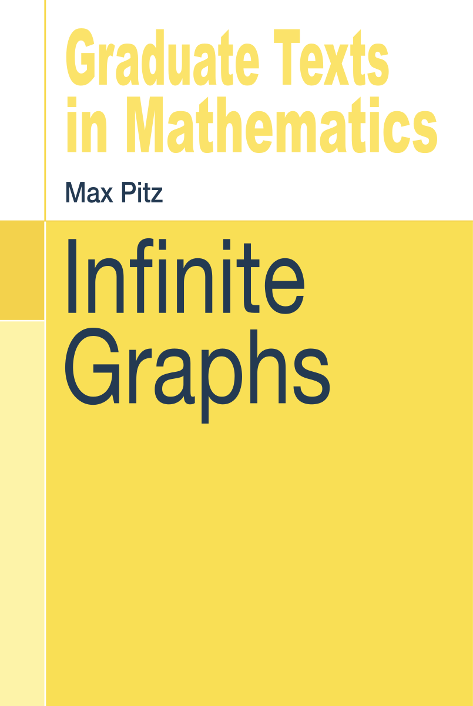

The field behind the book Infinite Graphs
One hundred years of structural infinite graph theory, 1927–2027, told in 100 papers I chose for their lasting contributions. Infinite Graphs is the first textbook devoted to this theory: it proves over half of these results in full and discusses most of the others.
Below the timeline, fifteen stories from the book each trace one of its central questions. Click a name or a mark to read about the result and where to find it in the book; zoom in to see all 100 papers.
Fifteen stories from the book each trace one of its central questions. Tap a paper or a story to read about the result and where to find it in the book.